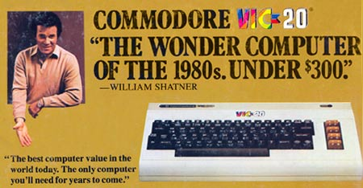

It Started With a Christmas Gift

The Commodore VIC 20 is an 8-bit home computer that was sold by Commodore Business Machines. The VIC-20 was released in 1980 and was the first computer of any description to sell one million units. When I was 10 years old I received a Commodore VIC 20 for Christmas. That VIC 20 ignited a passion for programming in me that I still have today, almost 40 years later.
Here recently I have developed a bit a nostalgia for the 8-bit computing days and decided to write a 6502 emulator in JavaScript. My first goal was to just write an emulator good enough to load the Commodore VIC 20 kernel and basic ROMs and be able to step through the execution to see how they work.
My next goal was to improve my emulator to support input via keyboard and to show video output. To achieve this goal I am going to need to improve the performance of my emulator and I thought I would also use this as an excuse to learn the true cycle timing of the 6502 instruction set.
I have recently started working on it again and pushed my emulator source code to github and hosted a live demo page.